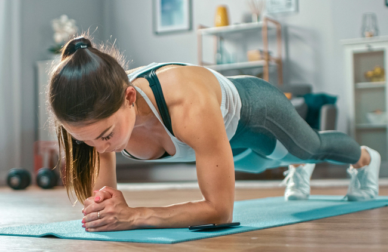

Recomendaciones para ejercitarse en el trabajo
Según un artículo publicado por la Biblioteca Nacional de Medicina de los EE. UU, una mala postura corporal puede acarrear con el paso del tiempo problemas perjudiciales para la salud. Por ello, es importante colocar la espalda lo más recta posible e incorporar los hombros ligeramente hacia atrás.
- Las piernas han de estar flexionadas por las rodillas y los pies apoyados completamente en el suelo.
- levantarte cada media hora, da una vuelta por la oficina y trata de estirarte un poco.
- Gira las muñecas y los tobillos de vez en cuando. Haz lo mismo con el cuello.
- Contrae los abdominales y los músculos de los glúteos, mantén unos segundos, relaja y repite varias veces.
- No olvides tomar descansos cortos pero frecuentes (5 minutos por cada 30 que trabajes).
Cómo diseñar tu rutina de ejercicios en casa
Elige los ejercicios que quieres usar. Según tu nivel planea el número total de repeticiones a realizar ( repeticiones).
Ejemplo:
- Ejercicios: Burpees, sentadillas, plank y zancada
- Volumen: 300 repeticiones totales
- Repeticiones por ejercicio: 75 repeticiones
- Series: 3 vueltas (25 repeticiones por ejercicio)
- 0 segundos de descanso entre series a una intensidad del 70%
- A partir de aquí se trata de ir ganando experiencia y valorar tus sensaciones Si recién empiezas es mejor con pocas repeticiones (de 5 a 12) y si quieres más series para que tu musculatura se adapte a las nuevas exigencia sy poco a poco podrás ir subiendo repeticiones
